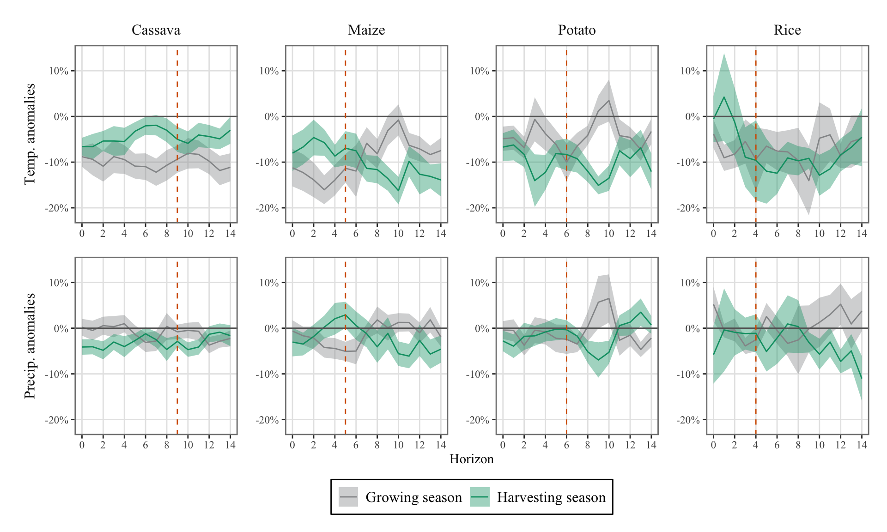
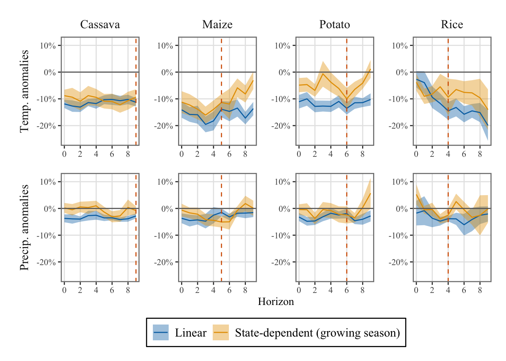

# install.packages("imputeTS")
# install.packages("ggh4x")
# install.packages("mFilter")
# install.packages("pbapply")
# install.packages("latex2exp")
# install.packages("sandwich")9 Time-varying exposure to weather shocks
Objectives
This chapter uses Auerbach and Gorodnichenko (2011) Local Projection framework to measure how the impact of weather shocks on agricultural outputs depends on crop growth stages. We consider two stages here: the growing season, and the harvesting season.
\[ \definecolor{bayesred}{RGB}{147, 30, 24} \definecolor{bayesblue}{RGB}{32, 35, 91} \definecolor{bayesorange}{RGB}{218, 120, 1} \definecolor{grey}{RGB}{128, 128, 128} \definecolor{couleur1}{RGB}{0,163,137} \definecolor{couleur2}{RGB}{255,124,0} \definecolor{couleur3}{RGB}{0, 110, 158} \definecolor{coul1}{RGB}{255,37,0} \definecolor{coul2}{RGB}{242,173,0} \definecolor{col_neg}{RGB}{155, 191, 221} \definecolor{col_pos}{RGB}{255, 128, 106} \definecolor{wongBlack}{RGB}{0,0,0} \definecolor{wongLightBlue}{RGB}{86, 180, 233} \definecolor{wongGold}{RGB}{230, 159, 0} \definecolor{wongGreen}{RGB}{0, 158, 115} \definecolor{wongYellow}{RGB}{240, 228, 66} \definecolor{wongBlue}{RGB}{0, 114, 178} \definecolor{wongOrange}{RGB}{213, 94, 0} \definecolor{wongPurple}{RGB}{204, 121, 167} \definecolor{IBMPurple}{RGB}{120, 94, 240} \definecolor{IBMMagenta}{RGB}{220, 38, 127} \]
The two states are defined accordingly with a state variable. The LP framework becomes: \[ \begin{aligned} y_{c,i,{\color{wongGold}t+h}} = & {\color{wongYellow}F}\left( {\color{wongGreen}\hat{z}_{c,i,t}}\right) \left[ \alpha_{c,i,h}^{{\color{wongLightBlue}G}} + {\color{wongOrange}\beta_{c,{\color{wongGold}h}}^{{\color{wongLightBlue}G},{\color{wongPurple}T}}} {\color{wongPurple}T_{i,{\color{wongGold}t}}} + {\color{wongOrange}\beta_{c,{\color{wongGold}h}}^{{\color{wongLightBlue}G},{\color{wongPurple}P}}} {\color{wongPurple}P_{i,{\color{wongGold}t}}}+ \gamma_{c,i,h}^{{\color{wongLightBlue}G}}% X_{t} + \zeta_{c,i,h}^{{\color{wongLightBlue}G}} \text{Trend}_{t} \times \text{Month}_t + \eta_{c,i,h}^{{\color{wongLightBlue}G}} \text{Trend}_{t}^{2} \times \text{Month}_t \right] \nonumber \\ & +\left( 1 - {\color{wongYellow}F}\left( {\color{wongGreen}\hat{z}_{c,i,t}}\right) \right) \left[ \alpha_{c,i,h}^{{\color{wongLightBlue}H}} + {\color{wongOrange}\beta_{c,{\color{wongGold}h}}^{{\color{wongLightBlue}H},{\color{wongPurple}T}}} {\color{wongPurple}T_{i,{\color{wongGold}t}}} + {\color{wongOrange}\beta_{c,{\color{wongGold}h}}^{{\color{wongLightBlue}H},{\color{wongPurple}P}}} {\color{wongPurple}P_{i,{\color{wongGold}t}}} + \gamma_{c,i, h}^{{\color{wongLightBlue}H}} X_{t} \zeta_{c,i,h}^{{\color{wongLightBlue}H}} \text{Trend}_{t} \times \text{Month}_t + \eta_{c,i,h}^{{\color{wongLightBlue}H}} \text{Trend}_{t}^{2} \times \text{Month}_t\right] \\ & +\varepsilon_{c,i,t+h} \end{aligned} \tag{9.1}\]
where Transition function is the cumulative distribution function of the standard normal distribution for a planted surface index: \[ {\color{wongYellow}\Phi}({\color{wongGreen}\hat{z}_{c,i,t}}) = \frac{1}{\sqrt{2 \pi}} \int_{-\infty}^{\hat{z}_{c,i,t}} \exp(-t^2/2) \, \text{d}t \tag{9.2}\]
The planted surface index, \({\color{wongGreen}\hat{z}_{i,t}}\) is computed based on two indicators, the planted surface and the harvested surface. Its construction involves the following steps:
Missing Value Replacement: Firstly, any missing values in the planted and harvested area series are replaced using linear interpolation. Only isolated missing values are replaced, while three consecutive missing values are left unchanged.
Growth Duration Definition: Next, a growth duration, denoted as \(T_c\), is determined: 4 for rice, 5 for maize, 6 for potato, and 8 for cassava.
Planting Area Index Calculation: The planting area index is computed as follows: Let \(c\) represent the name of the crop (extracted from the data) corresponding to the current iteration. We iterate over the available months and calculate the planting area index, denoted as \(y^{\text{flow}}\), using the following formula: \[y^{\text{flow}}_t = \sum_{j=\max(t-T_c,1)}^{t-1} \text{planted\_surface}_j - \sum_{j=\max(t-T_c,1)}^{t-1} \text{harvested\_surface}_j \tag{9.3}\]
Hodrick-Prescott Filter: We apply a Hodrick-Prescott filter to the resulting series \(y^{\text{flow}}\) to retain only the cyclical component. A value of \(\lambda = 14400\) is chosen for the filter parameter due to the monthly nature of the data.
Normalization: Finally, the cyclical values are normalized by dividing them by their empirical standard deviation.
Let us translate those steps in R now. Some packages are needed, make sure that they are installed.
Let us load the dataset:
library(tidyverse)── Attaching core tidyverse packages ──────────────────────── tidyverse 2.0.0 ──
✔ dplyr 1.1.4 ✔ readr 2.1.5
✔ forcats 1.0.0 ✔ stringr 1.5.1
✔ ggplot2 3.5.1 ✔ tibble 3.2.1
✔ lubridate 1.9.3 ✔ tidyr 1.3.1
✔ purrr 1.0.2
── Conflicts ────────────────────────────────────────── tidyverse_conflicts() ──
✖ dplyr::filter() masks stats::filter()
✖ dplyr::lag() masks stats::lag()
ℹ Use the conflicted package (<http://conflicted.r-lib.org/>) to force all conflicts to become errorslibrary(fastDummies)Thank you for using fastDummies!
To acknowledge our work, please cite the package:
Kaplan, J. & Schlegel, B. (2023). fastDummies: Fast Creation of Dummy (Binary) Columns and Rows from Categorical Variables. Version 1.7.1. URL: https://github.com/jacobkap/fastDummies, https://jacobkap.github.io/fastDummies/.library(cli)
load("../data/output/df_lp.rda")Some packages are needed, make sure that they are installed.
# install.packages("imputeTS")
# install.packages("ggh4x")
# install.packages("mFilter")
# install.packages("pbapply")
# install.packages("latex2exp")
# install.packages("sandwich")As in Chapter 7, we load some functions. The three functions get_index_longest_non_na(), keep_values_longest_non_na(), and get_data_lp() presented in ?sec-lp-functions are defined in the R script format_data.R saved in the weatherperu/R folder.
# Functions useful to shape the data for local projections
source("../weatherperu/R/format_data.R")# Load function in utils
source("../weatherperu/R/utils.R")
# Load detrending functions
source("../weatherperu/R/detrending.R")The function that performs the estimation is estimate_linear_lp(), as in Section 7.1.2. This function is defined in the estimations.R R script.
source("../weatherperu/R/estimations.R")9.1 Definition of the Transition State Variable
Let us create a table with the duration of the growing season for each crop:
# Duration of the growing season
gs_duration_df <- tribble(
~product_eng, ~tc,
"Rice", 4,
"Dent corn", 5,
"Potato", 6,
"Cassava", 9
)We focus on the following crops:
crops <- c("Rice", "Dent corn", "Potato", "Cassava")We then define a function that allows us to create multiple lags. This function is defined thanks to Pablo Cánovas.
#' Add lagged columns in a tibble for a variable
#' Source: https://typethepipe.com/vizs-and-tips/how-to-create-multiple-lags-in-r/
#'
#' @param df tibble
#' @param var name of the variable to get lag of
#' @param lags vector of desired lags
calculate_lags <- function(df, var, lags) {
map_lag <- lags |> map(~ partial(dplyr::lag, n = .x))
df |>
mutate(
across(
.cols = {{var}},
.fns = map_lag,
.names = "{.col}_lag{lags}"
)
)
}Then, we apply the remaining steps of the creation of the planting area index.
df_2 <- vector(mode = "list", length = length(crops))
# cli_progress_bar(total = length(crops))
for(i_crop in 1:length(crops)) {
crop <- crops[i_crop]
df_tmp <-
df |>
filter(product_eng == crop)
# Duration
tc <-
gs_duration_df |>
filter(product_eng == crop) |>
pull(tc)
df_tmp <-
df_tmp |>
group_by(region_id) |>
calculate_lags(surf_m, 1:tc) |>
calculate_lags(Value_surfR, 1:tc) |>
rowwise() |>
mutate(
sum_surf_m = sum(
across(
c(matches("^surf_m_lag"), surf_m)
),
na.rm = TRUE
),
sum_Value_surfR = sum(
across(
c(matches("^Value_surfR_lag"), Value_surfR)
),
na.rm = TRUE
),
) |>
group_by(region_id) |>
mutate(flow_y_tmp = sum_surf_m - sum_Value_surfR) |>
mutate(flow_y = lag(flow_y_tmp)) |>
mutate(flow_y = ifelse(row_number() == 1, flow_y_tmp, flow_y)) |>
select(
-matches("^surf_m_lag"),
-matches("^Value_surfR_lag"),
-flow_y_tmp, -sum_surf_m, -sum_Value_surfR
) |>
ungroup()
# Detrend with HP filter
df_tmp <-
df_tmp |>
group_by(region_id) |>
mutate(
flow_y_cycle = as.vector(
mFilter::hpfilter(
flow_y, freq = 14400, type = "lambda", drift = FALSE)$cycle
)
) |>
mutate(
# normalizing to have a unit variant
flow_y_pot = flow_y_cycle / sd(flow_y_cycle)
)
df_2[[i_crop]] <- df_tmp
# cli_progress_update(set = i_crop)
}
df <- df_2 |> bind_rows()9.2 Estimation
Now, let us turn to the estimation. We consider the following weather variables:
weather_variables <- c("temp_max_dev", "precip_piscop_sum_dev")And add the following control variables:
control_variables <- c("rer_hp", "r_hp", "pi", "ind_prod", "ONI", "price_int_inf")We can call the estimate_linear_lp() function to estimate the models at the different horizons. The estimation takes about a minute to run, we load results in this notebook.
resul_lp_regime <-
map(
crops, ~ estimate_linear_lp(
df = df,
horizons = 14,
y_name = "y_new_normalized",
group_name = "region_id",
detrend = TRUE,
add_month_fe = FALSE,
add_intercept = FALSE,
crop_name = .x,
control_names = control_variables,
weather_names = weather_variables,
share_geo = NULL,
transition_name = "flow_y_pot",
transition_method = "normal",
state_names = c("planted", "harvested"),
gamma = NULL,
std = "Cluster"
)
)
names(resul_lp_regime) <- crops
save(resul_lp_regime, file = "../R/output/resul_lp_regime.rda")load("../R/output/resul_lp_regime.rda")9.3 Results
We can visualize the Impulse Response Functions (IRFs) by plotting the estimated coefficients associated with the weather variables. The theme_paper() function has been defined when we loaded the utils.R script. This allows us to modify the theme of graphs made with {ggplot2}.
The name of the weather variables in the results:
weather_variables_season <-str_c(
rep(c("planted", "harvested"), each = 2),
rep(weather_variables, 2),
sep = "_"
)
weather_variables_season[1] "planted_temp_max_dev" "planted_precip_piscop_sum_dev"
[3] "harvested_temp_max_dev" "harvested_precip_piscop_sum_dev"Let us shape the results so that they can be fed to a the ggplot() data argument.
df_irfs_lp <-
map(resul_lp_regime, "coefs") |>
list_rbind() |>
filter(name %in% weather_variables_season) |>
rowwise() |>
mutate(
regime = case_when(
str_detect(name, "^planted") ~ "Growing season",
str_detect(name, "^harvested") ~ "Harvesting season",
TRUE ~ "Error"
),
weather = str_split(name, "(^planted_|^harvested_)")[[1]][2]
) |>
ungroup() |>
mutate(
shock_1_sd = value * std_shock,
lower_95 = (value - qnorm(0.975) * std) * std_shock,
upper_95 = (value + qnorm(0.975) * std) * std_shock,
lower_68 = (value - qnorm(0.84) * std) * std_shock,
upper_68 = (value + qnorm(0.84) * std) * std_shock
) |>
mutate(
crop = factor(
crop,
levels = c("Rice", "Dent corn", "Potato", "Cassava"),
labels = c("Rice", "Maize", "Potato", "Cassava"))
) |>
mutate(
weather = factor(
weather,
levels = c(
"temp_max_dev",
"precip_piscop_sum_dev"
),
labels = c(
"Temp. anomalies",
"Precip. anomalies"
)
),
regime = factor(
regime,
levels = c("Growing season", "Harvesting season")
)
)We can define another table with the confidence intervals ready to be plotted as ribbons. Note that we only plot 68% confidence interval later on, to avoid overloading the graphs:
df_irfs_lp_ci <-
df_irfs_lp |>
select(horizon, crop, weather, regime, matches("^(lower)|^(upper)", perl = TRUE)) |>
pivot_longer(
cols = matches("^(lower)|^(upper)", perl = TRUE),
names_pattern = "(.*)_(95|68)$",
names_to = c(".value", "level")
) |>
mutate(level = str_c(level, "%"))nb_h <- 14
# Duration of the growing season
gs_duration_df <- tribble(
~crop, ~tc,
"Rice", 4,
"Maize", 5,
"Potato", 6,
"Cassava", 9
)
ggplot() +
geom_ribbon(
data = df_irfs_lp_ci |> filter(level == "68%"),
mapping = aes(
x = horizon,
ymin = lower, ymax = upper, fill = regime
),
alpha = .4
) +
geom_line(
data = df_irfs_lp,
mapping = aes(x = horizon, y = shock_1_sd, colour = regime)) +
geom_hline(yintercept = 0, colour = "gray40") +
geom_vline(
data = gs_duration_df,
mapping = aes(xintercept = tc),
colour = "#D55E00", linetype = "dashed") +
ggh4x::facet_grid2(
weather~crop,
# scales = "free_y",
# independent = "y",
switch = "y",
axes = "all") +
scale_x_continuous(breaks = seq(0, nb_h, by = 2)) +
scale_y_continuous(labels = scales::percent) +
labs(x = "Horizon", y = NULL) +
scale_fill_manual(
NULL,
values = c(
"Growing season" = "#949698",
"Harvesting season" = "#009E73"
)
) +
scale_colour_manual(
NULL,
values = c(
"Growing season" = "#949698",
"Harvesting season" = "#009E73"
)
) +
theme_paper() +
theme(strip.placement = "outside")

9.3.1 Comparing results with the Linear Local Projections
Let us load the results obtained in Section 16.1.4 for the linear local projection. First, let us save the current results in different objects.
df_irfs_lp_season <- df_irfs_lp
df_irfs_lp_ci_season <- df_irfs_lp_ciNow we can load the results from the linear local projections.
load("../R/output/df_irfs_lp_piscop.rda")We focus on the growing season.
df_irfs_lp_season_comparison <-
df_irfs_lp |>
mutate(regime = "Linear") |>
rename(weather = name) |>
bind_rows(
df_irfs_lp_season |>
filter(regime == "Growing season") |>
mutate(regime = "State-dependent (growing season)")
) |>
filter(horizon <= 9)
df_irfs_lp_ci_season_comparison <-
df_irfs_lp_ci |>
mutate(regime = "Linear") |>
rename(weather = name) |>
bind_rows(
df_irfs_lp_ci_season |>
filter(regime == "Growing season") |>
mutate(regime = "State-dependent (growing season)")
) |>
filter(horizon <= 9)Then, we can compare the IRFs obtained for the growing season with the ones obtained in the linear case, without states.
ggplot() +
geom_ribbon(
data = df_irfs_lp_ci_season_comparison |>
filter(level == "68%"),
mapping = aes(
x = horizon,
ymin = lower, ymax = upper, fill = regime
),
alpha = .4
) +
geom_line(
data = df_irfs_lp_season_comparison,
mapping = aes(x = horizon, y = shock_1_sd, colour = regime)) +
geom_hline(yintercept = 0, colour = "gray40") +
geom_vline(
data = gs_duration_df,
mapping = aes(xintercept = tc),
colour = "#D55E00", linetype = "dashed") +
ggh4x::facet_grid2(
weather~crop,
# scales = "free_y",
# independent = "y",
axes = "all",
switch = "y"
) +
scale_x_continuous(breaks = seq(0, 9, by = 2)) +
scale_y_continuous(labels = scales::percent) +
labs(x = "Horizon", y = NULL) +
scale_fill_manual(
NULL,
values = c(
"Linear" = "#0072B2",
"State-dependent (growing season)" = "#E69F00"
)
) +
scale_colour_manual(
NULL,
values = c(
"Linear" = "#0072B2",
"State-dependent (growing season)" = "#E69F00"
)
) +
theme_paper() +
theme(strip.placement = "outside")
